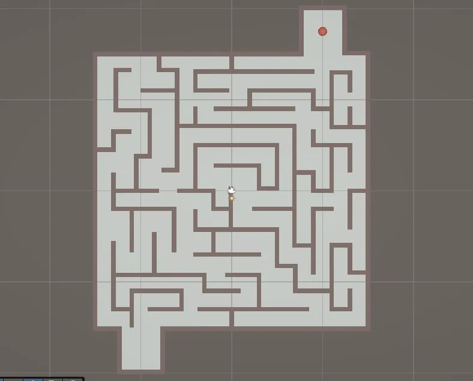
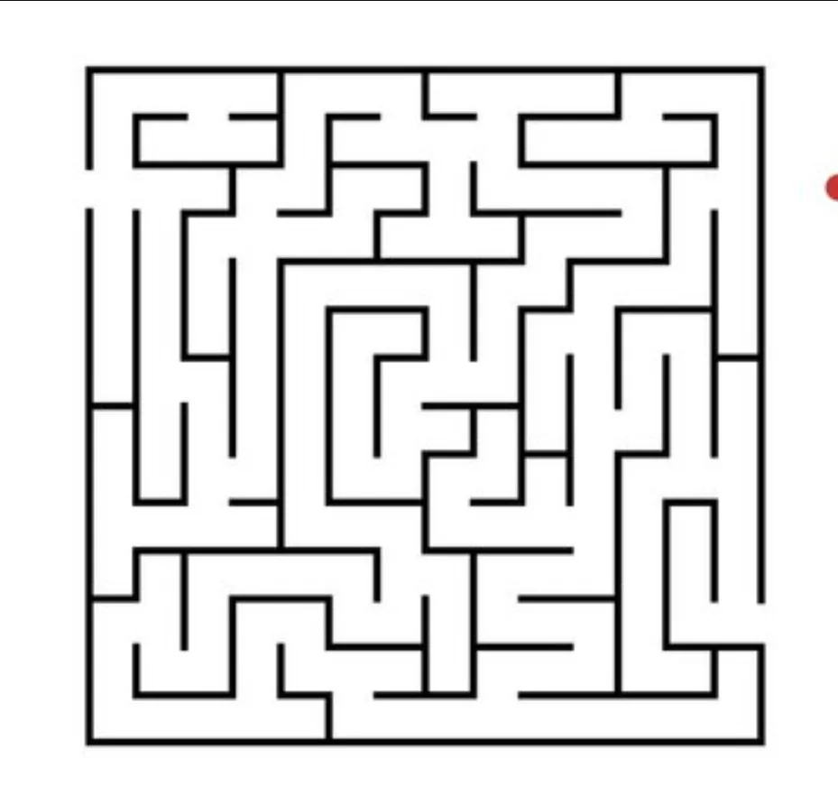
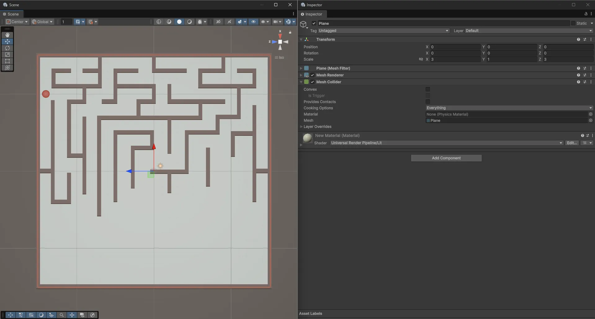
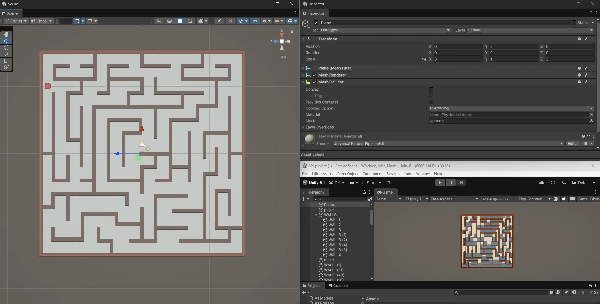

My first game ever: a demo piece built in Unity to test my skills. A ball moves through a maze from start to finish, across a few levels.




The original source code is no longer available; these screenshots are what remains.